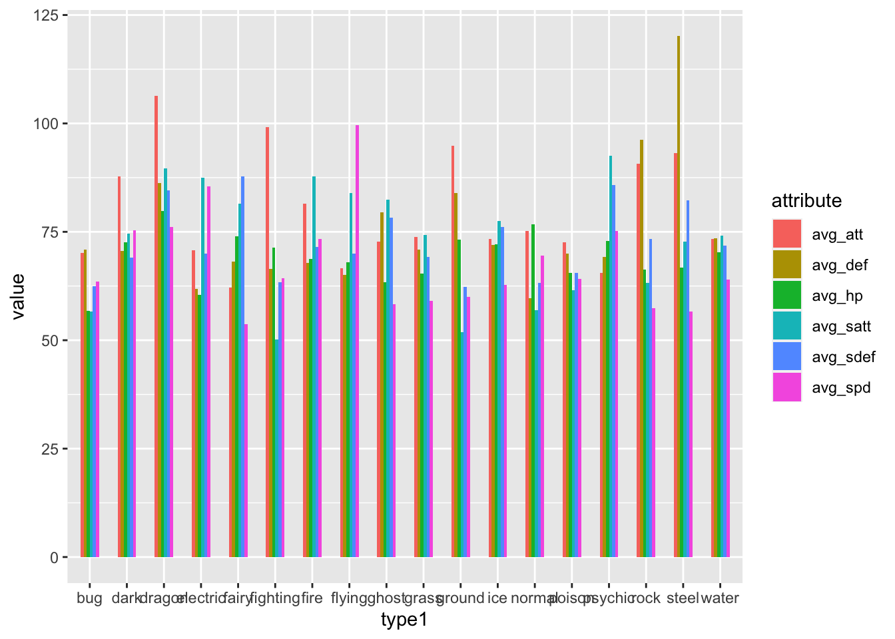
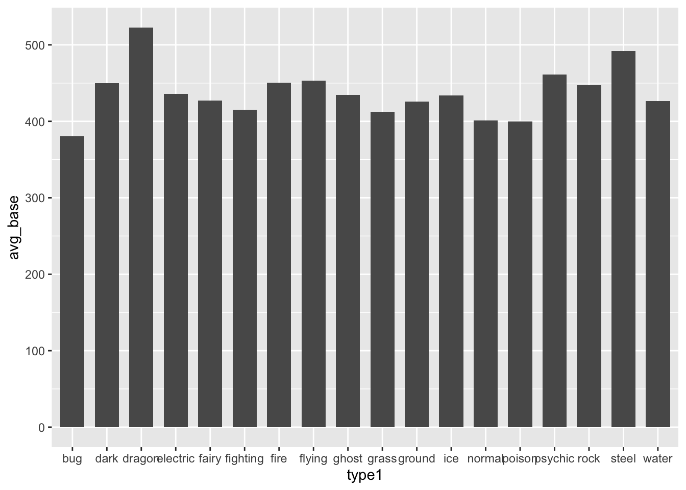
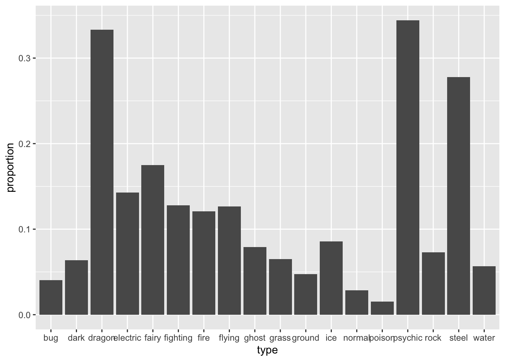
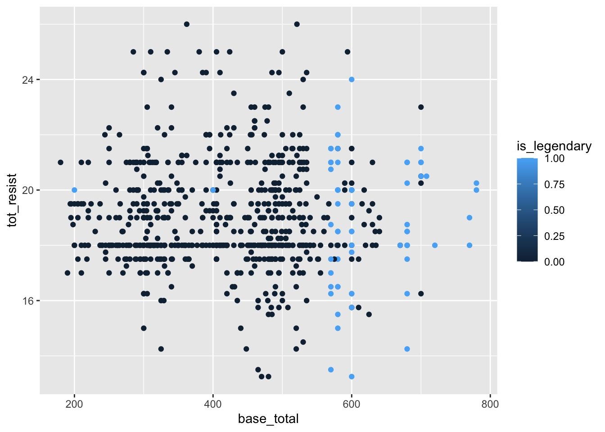
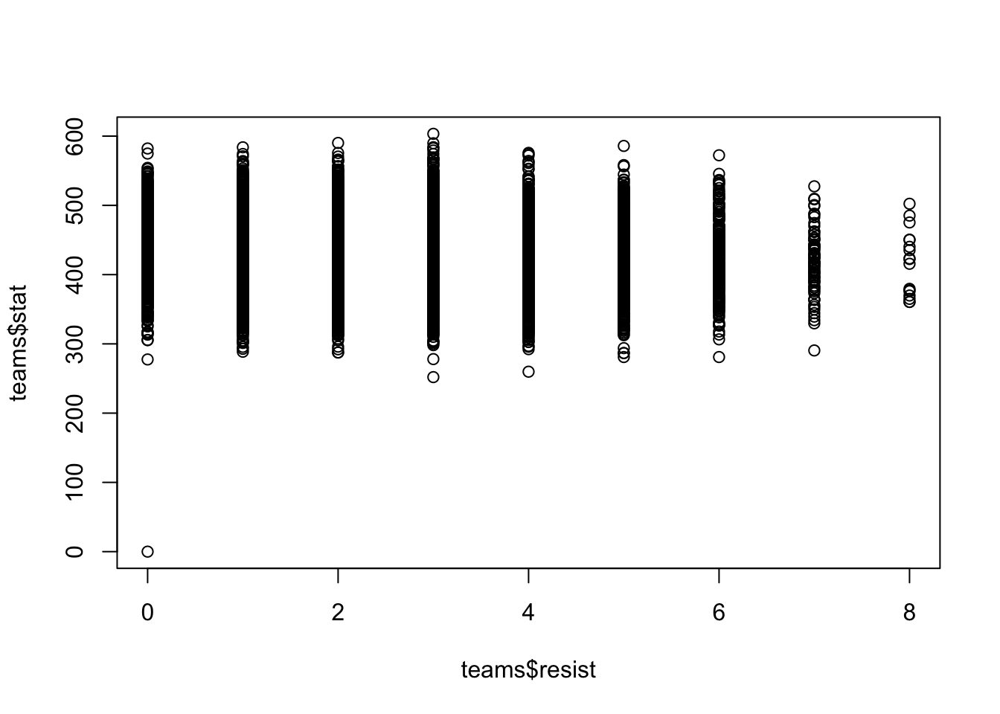

library(tidyverse)
knitr::opts_chunk$set(echo = TRUE, warning=FALSE, message=FALSE)Final Project Report
Final Project
Anirudh Lakkaraju
Project & Data Description
Abstract
Pokémon games are video games where players take on the role of trainers who capture and train creatures called Pokémon. The objective is to become a Pokémon Master by collecting a variety of Pokémon and battling other trainers. Each Pokémon has unique abilities and can evolve into more powerful forms through experience gained in battles. Battles take place between trainers and their Pokémon, where they strategically choose moves to defeat their opponents. Pokémon have different types, such as fire, water, grass, and electric, which determine their strengths and weaknesses in battles.
As a long-time fan of Pokémon and someone who has played all the games, I am interested in exploring the idea of building the “best” team of six Pokémon. With over 800 Pokemon across seven generations, selecting the optimal team is a daunting task. My project does this by understanding how the moves, types, and stats of each of the 801 Pokémon determine their value in a playthrough. Each Pokémon type has its strengths and weaknesses against other types, so I explore the idea of creating a “best” team with the least amount of weaknesses. Additionally, this project explored which type is the strongest and weakest type, and also which type has the highest likelihood of being legendary, which are rare and have the highest base stats in the game.
Data Introduction
This dataset is sourced from Kaggle and contains information on all 802 Pokemon from all Seven Generations of Pokemon. The information contained in this dataset include Base Stats, Performance against Other Types, Height, Weight, Classification, Egg Steps, Experience Points, Abilities, etc. The information was scraped from http://serebii.net/.
Each row contains the complete information of one Pokemon and the following are the meanings of each column -
name: The English name of the Pokemon
japanese_name: The Original Japanese name of the Pokemon
pokedex_number: The entry number of the Pokemon in the National Pokedex
percentage_male: The percentage of the species that are male. Blank if the Pokemon is genderless.
type1: The Primary Type of the Pokemon
type2: The Secondary Type of the Pokemon
classification: The Classification of the Pokemon as described by the Sun and Moon Pokedex
height_m: Height of the Pokemon in metres
weight_kg: The Weight of the Pokemon in kilograms
capture_rate: Capture Rate of the Pokemon
base_egg_steps: The number of steps required to hatch an egg of the Pokemon
abilities: A stringified list of abilities that the Pokemon is capable of having
experience_growth: The Experience Growth of the Pokemon
base_happiness: Base Happiness of the Pokemon
against_?: Eighteen features that denote the amount of damage taken against an attack of a particular type
hp: The Base HP of the Pokemon
attack: The Base Attack of the Pokemon
defense: The Base Defense of the Pokemon
sp_attack: The Base Special Attack of the Pokemon
sp_defense: The Base Special Defense of the Pokemon
speed: The Base Speed of the Pokemon
generation: The numbered generation which the Pokemon was first introduced
is_legendary: Denotes if the Pokemon is legendary.
Basic data description
pkmn <- read_csv("AnirudhLakkaraju_FinalProjectData/pokemon.csv")dim(pkmn)[1] 801 41head(pkmn)summary(pkmn) abilities against_bug against_dark against_dragon
Length:801 Min. :0.2500 Min. :0.250 Min. :0.0000
Class :character 1st Qu.:0.5000 1st Qu.:1.000 1st Qu.:1.0000
Mode :character Median :1.0000 Median :1.000 Median :1.0000
Mean :0.9963 Mean :1.057 Mean :0.9688
3rd Qu.:1.0000 3rd Qu.:1.000 3rd Qu.:1.0000
Max. :4.0000 Max. :4.000 Max. :2.0000
against_electric against_fairy against_fight against_fire
Min. :0.000 Min. :0.250 Min. :0.000 Min. :0.250
1st Qu.:0.500 1st Qu.:1.000 1st Qu.:0.500 1st Qu.:0.500
Median :1.000 Median :1.000 Median :1.000 Median :1.000
Mean :1.074 Mean :1.069 Mean :1.066 Mean :1.135
3rd Qu.:1.000 3rd Qu.:1.000 3rd Qu.:1.000 3rd Qu.:2.000
Max. :4.000 Max. :4.000 Max. :4.000 Max. :4.000
against_flying against_ghost against_grass against_ground
Min. :0.250 Min. :0.000 Min. :0.250 Min. :0.000
1st Qu.:1.000 1st Qu.:1.000 1st Qu.:0.500 1st Qu.:1.000
Median :1.000 Median :1.000 Median :1.000 Median :1.000
Mean :1.193 Mean :0.985 Mean :1.034 Mean :1.098
3rd Qu.:1.000 3rd Qu.:1.000 3rd Qu.:1.000 3rd Qu.:1.000
Max. :4.000 Max. :4.000 Max. :4.000 Max. :4.000
against_ice against_normal against_poison against_psychic
Min. :0.250 Min. :0.000 Min. :0.0000 Min. :0.000
1st Qu.:0.500 1st Qu.:1.000 1st Qu.:0.5000 1st Qu.:1.000
Median :1.000 Median :1.000 Median :1.0000 Median :1.000
Mean :1.208 Mean :0.887 Mean :0.9753 Mean :1.005
3rd Qu.:2.000 3rd Qu.:1.000 3rd Qu.:1.0000 3rd Qu.:1.000
Max. :4.000 Max. :1.000 Max. :4.0000 Max. :4.000
against_rock against_steel against_water attack
Min. :0.25 Min. :0.2500 Min. :0.250 Min. : 5.00
1st Qu.:1.00 1st Qu.:0.5000 1st Qu.:0.500 1st Qu.: 55.00
Median :1.00 Median :1.0000 Median :1.000 Median : 75.00
Mean :1.25 Mean :0.9835 Mean :1.058 Mean : 77.86
3rd Qu.:2.00 3rd Qu.:1.0000 3rd Qu.:1.000 3rd Qu.:100.00
Max. :4.00 Max. :4.0000 Max. :4.000 Max. :185.00
base_egg_steps base_happiness base_total capture_rate
Min. : 1280 Min. : 0.00 Min. :180.0 Length:801
1st Qu.: 5120 1st Qu.: 70.00 1st Qu.:320.0 Class :character
Median : 5120 Median : 70.00 Median :435.0 Mode :character
Mean : 7191 Mean : 65.36 Mean :428.4
3rd Qu.: 6400 3rd Qu.: 70.00 3rd Qu.:505.0
Max. :30720 Max. :140.00 Max. :780.0
classfication defense experience_growth height_m
Length:801 Min. : 5.00 Min. : 600000 Min. : 0.100
Class :character 1st Qu.: 50.00 1st Qu.:1000000 1st Qu.: 0.600
Mode :character Median : 70.00 Median :1000000 Median : 1.000
Mean : 73.01 Mean :1054996 Mean : 1.164
3rd Qu.: 90.00 3rd Qu.:1059860 3rd Qu.: 1.500
Max. :230.00 Max. :1640000 Max. :14.500
NA's :20
hp japanese_name name percentage_male
Min. : 1.00 Length:801 Length:801 Min. : 0.00
1st Qu.: 50.00 Class :character Class :character 1st Qu.: 50.00
Median : 65.00 Mode :character Mode :character Median : 50.00
Mean : 68.96 Mean : 55.16
3rd Qu.: 80.00 3rd Qu.: 50.00
Max. :255.00 Max. :100.00
NA's :98
pokedex_number sp_attack sp_defense speed
Min. : 1 Min. : 10.00 Min. : 20.00 Min. : 5.00
1st Qu.:201 1st Qu.: 45.00 1st Qu.: 50.00 1st Qu.: 45.00
Median :401 Median : 65.00 Median : 66.00 Median : 65.00
Mean :401 Mean : 71.31 Mean : 70.91 Mean : 66.33
3rd Qu.:601 3rd Qu.: 91.00 3rd Qu.: 90.00 3rd Qu.: 85.00
Max. :801 Max. :194.00 Max. :230.00 Max. :180.00
type1 type2 weight_kg generation
Length:801 Length:801 Min. : 0.10 Min. :1.00
Class :character Class :character 1st Qu.: 9.00 1st Qu.:2.00
Mode :character Mode :character Median : 27.30 Median :4.00
Mean : 61.38 Mean :3.69
3rd Qu.: 64.80 3rd Qu.:5.00
Max. :999.90 Max. :7.00
NA's :20
is_legendary
Min. :0.00000
1st Qu.:0.00000
Median :0.00000
Mean :0.08739
3rd Qu.:0.00000
Max. :1.00000
Analysis and Visualization
Which type is the strongest overall? Which is the weakest?
In the world of Pokémon, the concept of strength is not defined in a fixed manner, but there are certain indicators that provide insight into a Pokémon’s perceived strength within the game:
Base stats: Pokémon with higher base stats are generally considered stronger, as these stats determine their overall power, defenses, and abilities.
Resistance: Pokémon that possess resistance to a wide range of attack types are generally regarded as more durable and formidable. Their ability to withstand various attacks contributes to their perceived strength.
pkmn %>%
group_by(type1) %>%
summarise(
avg_hp = mean(hp),
avg_att = mean(attack),
avg_def = mean(defense),
avg_satt = mean(sp_attack),
avg_sdef = mean(sp_defense),
avg_spd = mean(speed)
) %>%
gather(`avg_hp`,`avg_att`,`avg_def`,`avg_satt`,`avg_sdef`,`avg_spd`, key="attribute", value="value") %>%
ggplot() +
geom_col(aes(x=type1, fill=attribute, y=value), position='dodge', width=0.5)
pkmn %>%
group_by(type1) %>%
summarise(
avg_base = mean(base_total),
) %>%
ggplot() +
geom_col(aes(x=type1, y=avg_base), width=0.7)
To obtain a simplified measure of resistance for each Pokémon, we can sum up the values across the 18 columns labeled “against_X.” As there are a total of 18 different attack types, a Pokémon that receives neutral damage from all attacks would have a total resistance score of 18. Consequently, a lower total resistance value indicates a more defensive Pokémon, as it will sustain less damage from attacks in general.
pkmn = pkmn %>%
mutate(tot_resist = against_bug+against_dark+against_dragon+against_electric+against_fairy+against_fight+against_fire+against_flying+against_ghost+against_grass+against_ground+against_ice+against_normal+against_poison+against_psychic+against_rock+against_steel+against_water)Analysing resistance is a little more complex as we are unable to aggregate by type, since pokemon typing can synergise with each other to confer different resistances to a pokemon. We can however perform some other analyses to have a rough sense.
pkmn %>%
arrange(min_rank(tot_resist)) %>%
dplyr::select(name, tot_resist, type1, type2) %>%
print(n=20)# A tibble: 801 × 4
name tot_resist type1 type2
<chr> <dbl> <chr> <chr>
1 Mawile 13.2 steel fairy
2 Klefki 13.2 steel fairy
3 Magearna 13.2 steel fairy
4 Skarmory 13.5 steel flying
5 Celesteela 13.5 steel flying
6 Dialga 14.2 steel dragon
7 Honedge 14.2 steel ghost
8 Doublade 14.2 steel ghost
9 Aegislash 14.2 steel ghost
10 Empoleon 14.5 water steel
11 Registeel 15 steel <NA>
12 Klink 15 steel <NA>
13 Klang 15 steel <NA>
14 Klinklang 15 steel <NA>
15 Sableye 15.5 dark ghost
16 Spiritomb 15.5 ghost dark
17 Lucario 15.5 fighting steel
18 Cobalion 15.5 steel fighting
19 Forretress 15.8 bug steel
20 Steelix 15.8 steel ground
# ℹ 781 more rowspkmn %>%
arrange(min_rank(desc(tot_resist))) %>%
dplyr::select(name, tot_resist, type1, type2) %>%
print(n=20)# A tibble: 801 × 4
name tot_resist type1 type2
<chr> <dbl> <chr> <chr>
1 Amaura 26 rock ice
2 Aurorus 26 rock ice
3 Paras 25 bug grass
4 Parasect 25 bug grass
5 Wormadam 25 bug grass
6 Snover 25 grass ice
7 Abomasnow 25 grass ice
8 Sewaddle 25 bug grass
9 Swadloon 25 bug grass
10 Leavanny 25 bug grass
11 Geodude 24.2 rock ground
12 Graveler 24.2 rock ground
13 Golem 24.2 rock ground
14 Onix 24.2 rock ground
15 Rhyhorn 24.2 ground rock
16 Rhydon 24.2 ground rock
17 Larvitar 24.2 rock ground
18 Pupitar 24.2 rock ground
19 Rhyperior 24.2 ground rock
20 Exeggcute 24 grass psychic
# ℹ 781 more rowsWhich type is the most likely to be a legendary Pokemon?
table_1 = table(pkmn$is_legendary, pkmn$type1)
table_2 = table(pkmn$is_legendary, pkmn$type2)table_1
bug dark dragon electric fairy fighting fire flying ghost grass ground ice
0 69 26 20 34 17 28 47 2 26 74 30 21
1 3 3 7 5 1 0 5 1 1 4 2 2
normal poison psychic rock steel water
0 102 32 36 41 18 108
1 3 0 17 4 6 6table_2
bug dark dragon electric fairy fighting fire flying ghost grass ground ice
0 5 21 13 8 23 19 11 85 12 18 33 14
1 0 0 4 1 6 6 2 10 2 2 1 1
normal poison psychic rock steel water
0 4 33 25 14 18 16
1 0 1 4 0 4 1table_3 = table_1 + table_2table_3
bug dark dragon electric fairy fighting fire flying ghost grass ground ice
0 74 47 33 42 40 47 58 87 38 92 63 35
1 3 3 11 6 7 6 7 11 3 6 3 3
normal poison psychic rock steel water
0 106 65 61 55 36 124
1 3 1 21 4 10 7To interpret table_3, we can say that a Bug type pokemon has 3/77 chance to be legendary. Let's do this visually:
table_3 = as.data.frame(table_1 + table_2)
colnames(table_3) = c("is_legendary", "type", "freq")
table_3 = table_3%>%
mutate(is_legendary = ifelse(is_legendary==0, "no", "yes")) %>%
spread(key=is_legendary, value=freq) %>%
mutate(proportion=yes/no)
table_3ggplot(table_3) +
geom_col(aes(type, proportion))
The diagram makes it clear that Psychic and Dragon types are the mostly likely to be legendary. In other words, if a pokemon has Psychic as one of its types, it has a 34% chance to be legendary.
Can you build a Pokemon dream team? A team of 6 Pokemon that inflicts the most damage while remaining relatively impervious to damage.
In the realm of Pokémon, constructing a “dream team” extends beyond simply assembling a group of six highly regarded Pokémon. There are numerous additional factors that influence the team’s performance. Factors such as abilities and movesets can significantly impact a Pokémon’s effectiveness. Some Pokémon are specifically designed to fulfill particular roles within a team, such as being a damage dealer, a support Pokémon, or a defensive shield. Additionally, certain Pokémon synergize with each other, resulting in a combined effect that surpasses their individual capabilities.
However, for the purpose of analysis, we will focus solely on the individual attributes of each Pokémon. Our aim is to identify Pokémon that possess well-rounded qualities. By examining the available columns, particularly the base_total and tot_resist, we can conduct a scatter plot to obtain the following results:
ggplot(pkmn) +
geom_point(aes(base_total, tot_resist, color=is_legendary))
pkmn %>%
filter(base_total>=600, tot_resist<17)%>%
arrange(desc(base_total))%>%
dplyr::select(name, base_total, type1, type2, tot_resist)A well-constructed team should ideally consist of Pokémon that can cover each other’s weaknesses. Therefore, for every potential attack type, the team should include at least one Pokémon capable of resisting it. We will employ a trial-and-error approach to achieve this:
Select a random team of six Pokémon.
Calculate the average base_total of the team (higher values are preferred).
Ensure that for each against_type, the team includes at least one Pokémon that can resist it.
Initialize a counter that increments by one for each against_type that the team is unable to resist (assuming normal damage is acceptable).
Sum the counter for the team (lower values are preferred; a score of 0 indicates that the team is resistant to all attacking types).
Store the six Pokémon, along with the team’s average base_total and counter, in a dataframe.
Repeat steps 1-6 to identify the best team configuration.
teams = data.frame(
p1 = 0,
p2 = 0,
p3 = 0,
p4 = 0,
p5 = 0,
p6 = 0,
resist = 0,
stat = 0)
set.seed(565)
for (i in 1:10000) {
team = pkmn %>%
dplyr::select(33, 2:19, 23) %>%
sample_n(6)
team_resist = team %>%
dplyr::select(2:19) %>%
t() %>%
as.data.frame() %>%
mutate(V7 = ifelse(
V1 < 1, 0, ifelse(
V2 < 1, 0, ifelse(
V3 < 1, 0, ifelse(
V4 < 1, 0, ifelse(
V5 < 1, 0, ifelse(
V6 < 1, 0, ifelse(
V1 == 1 & V2 == 1 & V3 == 1 & V4 == 1 & V5 == 1 & V6 == 1, 0, 1
)
)
)
)
)
)
)
)
team_resist = sum(team_resist$V7)
team_stat = mean(team$base_total)
new = c(team$pokedex_number[1],
team$pokedex_number[2],
team$pokedex_number[3],
team$pokedex_number[4],
team$pokedex_number[5],
team$pokedex_number[6],
team_resist,
team_stat
)
teams = rbind(teams, new)
}
plot(teams$resist, teams$stat)
teams %>%
filter(resist == 0, stat > 0) %>%
arrange(desc(stat)) %>%
top_n(10)pkmn %>%
slice(612, 635, 681, 254, 485, 382) %>%
dplyr::select(name, type1, type2, base_total, tot_resist, is_legendary)To gain further insight, let’s examine one of the top teams from the Masters Division of the 2017 World Pokémon Championships.
pkmn %>%
slice(373,445,787,186,785,376) %>%
dplyr::select(name, type1, type2, base_total, tot_resist, is_legendary)A pretty solid team indeed! While the described analysis will definitely not outperform a professional team, it serves as a good starting point for a novice looking to try out different combinations.
Observations and Conclusions
Let’s address each of the research questions that this project aims to explore:
Which type is the strongest overall? Which is the weakest?
The initial graph reveals that Dragon types possess the greatest offensive strength, Flying types exhibit the highest speed, and Steel types showcase exceptional defense. Moving on to the second graph, which takes into account all stats, we observe that Dragon and Steel types boast the highest average base stats, while Bug types have the lowest.
When the Pokémon are sorted based on their total resistance scores, it becomes evident that the top 20 Pokémon with the highest resistance (corresponding to the lowest
tot_resistvalues) predominantly include Steel types. Conversely, Pokémon with Rock, Ground, Bug, Ice, or Grass types tend to take increased damage and are consequently considered weaker.In summary, based on the three indicators discussed, it can be concluded that Dragon and Steel types are generally stronger, while Bug types are comparatively weaker.
Which type is the most likely to be a legendary Pokemon?
Another way to look at the question will be - which typing has the highest proportion of legendary pokemon? To answer this we will need to consider both the primary and secondary typing of the pokemon.
From table 3 we can say that a Bug type pokemon has 3/77 chance to be legendary. By visualizing this, it is clear that Psychic and Dragon types are the mostly likely to be legendary. In other words, if a pokemon has Psychic as one of its types, it has a 34% chance to be legendary.
Can you build a Pokemon dream team? A team of 6 Pokemon that inflicts the most damage while remaining relatively impervious to damage.
Creating a Pokémon “dream team” goes beyond selecting highly regarded Pokémon. Abilities, movesets, and team roles impact a Pokémon’s effectiveness. Synergy between Pokémon enhances their collective strength. For analysis, we’ll focus on individual attributes like base_total and tot_resist. A scatter plot will reveal insights.
Upon observing the first scatter plot, we can see that the data points roughly create a circular pattern. The points of interest lie around the lower-right corner, where the base_total is high and tot_resist is low. It is worth noting that while many legendary Pokémon exhibit high base_total stats, their resistances to different attack types vary significantly. Building upon our previous analysis of Pokémon types, we have determined that Steel types possess a notable advantage in terms of resistance against attacks.
Based on our criteria of selecting Pokémon from the lower-right corner, we can visually identify six Pokémon: Metagross, Dialga, Solgaleo, Magearna, Lucario, and Steelix/Genesect. Once again, it is notable that all six of these Pokémon have the Steel type as one of their typings.
However, it is important to recognize that this selection approach disregards team synergy. While these Pokémon may be individually strong, experienced Pokémon players would quickly point out that such a team would be easily defeated. This is due to the fact that all of these Pokémon share the Steel typing, making them collectively weak against Fire, Ground, and Fighting attacks.
On applying the proposed algorithm, we arrive at a much more balanced team that possesses the ability to resist attacks from all types. The team consists of - Haxorus, Hydriegon, Aegishash, Sceptile, Heatran, and Kyogre.
It includes two legendary Pokémon and exhibits diversity in terms of typing, stats, and resistances. However, it is essential to recognize that this selection method is quite basic and overlooks various other aspects of synergy, such as items, abilities, natures, and movesets, which can significantly impact a team’s effectiveness. Additionally, it’s worth noting that the sample space considered in this analysis is relatively small compared to the vast number of potential team combinations available.
For reference we also look at the team used at the Master’s Division of 2017 World Pokemon Championship.
Future Directions
Pokemon is a game with lot of in depth strategy and chess like thought process. This project holds lot of potential for further analysis. Some further avenues we can explore are -
Advanced Synergy Analysis: Explore the incorporation of additional factors like items, abilities, natures, and movesets to assess the synergy and effectiveness of Pokémon teams. These elements can greatly impact battle strategies and team dynamics.
Statistical Modeling: Utilize statistical modeling techniques, such as machine learning algorithms, to predict and optimize team compositions based on various criteria like offensive power, defensive capabilities, and resistances. This could involve training models on existing competitive battle data to identify optimal team combinations.
Competitive Analysis: Conduct an in-depth analysis of competitive battles and team compositions from official Pokémon tournaments or online battle communities. Analyze winning strategies, team synergies, and popular Pokémon choices to gain insights into successful team-building approaches.
User Interface and Visualization: Build an interactive user interface or a web application that allows users to input their desired team criteria and preferences, and generates optimized team suggestions based on the analysis. Visualize team compositions, resistances, and other relevant information to aid in decision-making.
By exploring these future directions, the project can evolve into a comprehensive tool for Pokémon trainers to optimize their team compositions, make informed strategic decisions, and enhance their competitive gameplay.
References
- R Programming
- Kaggle